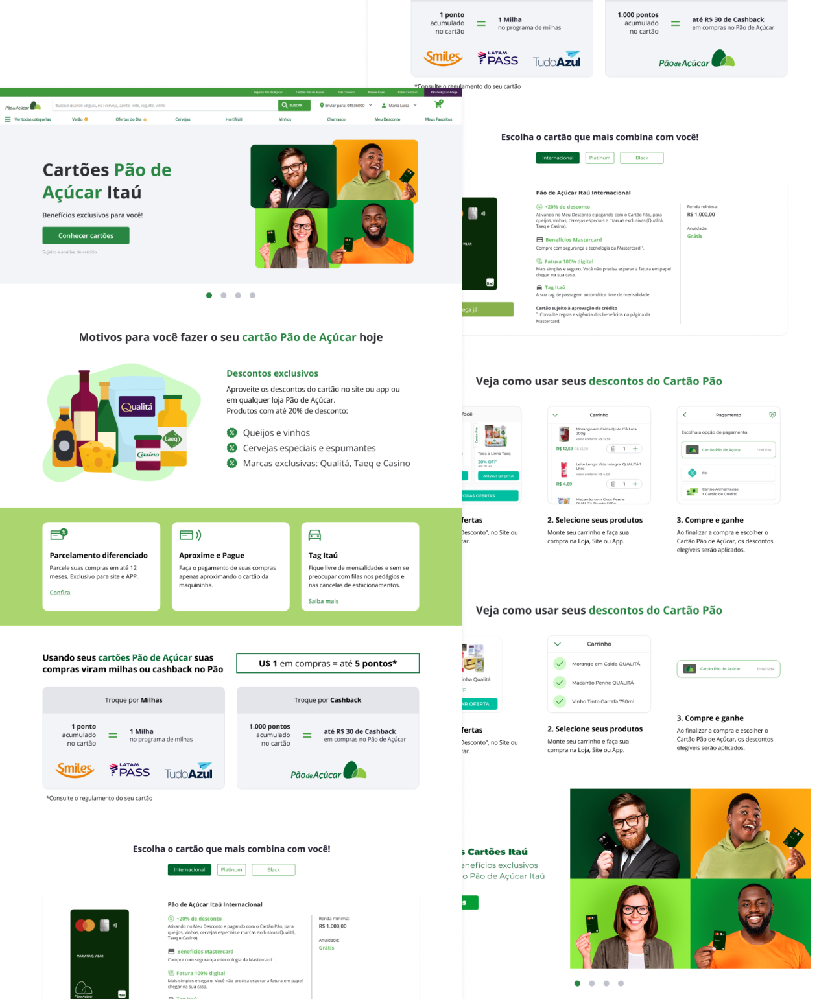
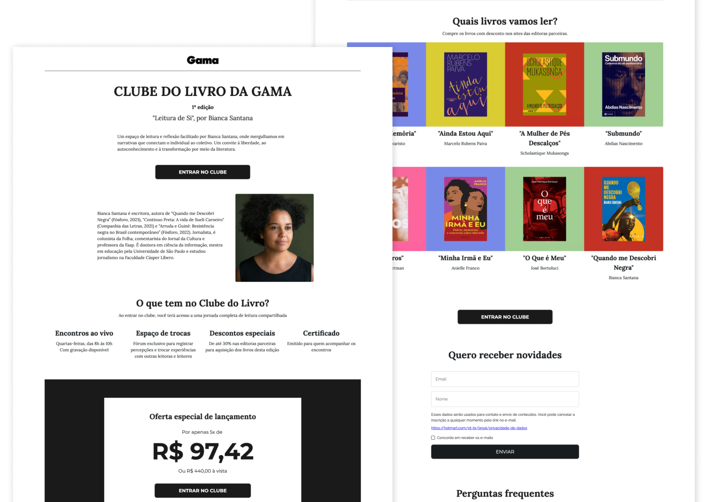
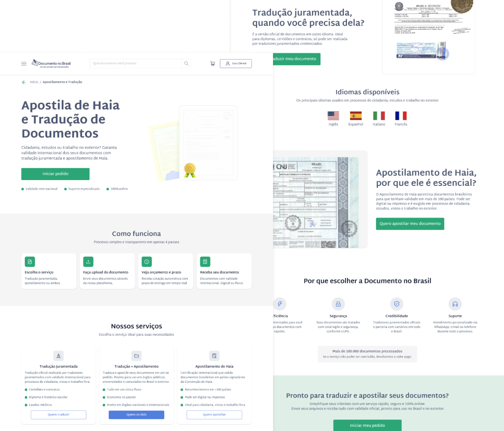
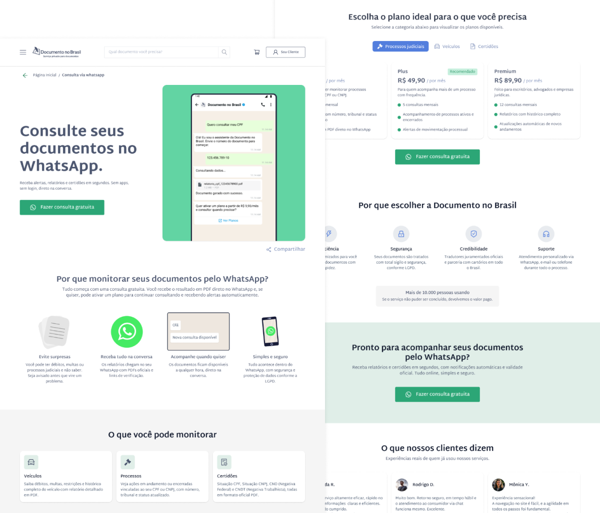

Landing pages

Essa coleção reúne diferentes landing pages que desenvolvi para marcas e projetos com necessidades específicas, como campanhas de captação e páginas institucionais.
Cada uma foi pensada para comunicar com clareza, guiar o usuário à ação e refletir a identidade visual de cada negócio.
Landing page para Cartão Pão de Açúcar Itaucard
Desenvolvimento de uma página para apresentar os benefícios e funcionalidades dos cartões Pão de Açúcar em parceria com o Itaú, com foco em conversão de novos clientes.
O objetivo principal era criar uma página que:
- Apresentasse os principais diferenciais e benefícios do cartão;
- Mostrasse como o cliente pode acumular milhas ou cashback;
- Orientasse o usuário sobre como usar os descontos e vantagens exclusivas;
- Transmitisse confiança e proximidade, alinhada à identidade das marcas Pão de Açúcar e Itaú.

Landing page para Clube do Livro
Criação de uma landing page para divulgar a primeira edição do Clube do Livro, promovido pela Revista Gama, com foco na conversão de inscrições.
O objetivo principal era criar uma página de apresentação do clube que:
- Explicasse o propósito e os benefícios do Clube do Livro;
- Apresentasse a curadora e os livros selecionados;
- Facilitasse a inscrição dos interessados;
- Estivesse alinhada com a identidade visual do clube.

Landing page para Tradução e Apostila de Documentos
Criação de uma landing page para promover o serviço online de tradução juramentada e apostilamento de documentos do site documentonobrasil. Com foco em orçamentos instantâneos e conversão de pedidos.
O objetivo principal era criar uma página que:
- Explicasse de forma clara o processo de tradução e apostilamento;
- Destacasse a validade internacional dos documentos emitidos;
- Facilitasse o envio de arquivos e a solicitação de orçamento;

Landing page para Monitoramento de Documentos via WhatsApp
Desenvolvimento de uma landing page para divulgar o serviço de monitoramento de documentos (veículos, processos e certidões) com envio de relatórios e alertas diretamente pelo WhatsApp.
O objetivo principal era criar uma página que:
- Apresentasse o monitoramento de forma simples e visual;
- Explicasse o processo de ativação a partir da consulta gratuita;
- Mostrasse os planos disponíveis com suas diferenças de uso;
- Reforçasse credibilidade com depoimentos, selos de segurança e parcerias oficiais.
